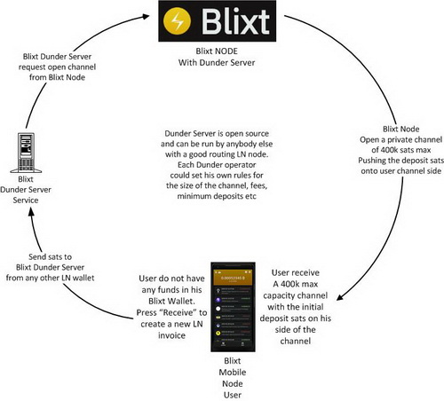

Blixt Wallet use cases
Blixt Wallet Video Demos
Here we start with some video demonstrations about how to use features and functionalities of Blixt Wallet in real situations. Credits also to @colbitcoin and @Rager Major for these great demo videos.
IMPORTANT NOTES / TIPS
- Before start using these Tor channels and the Blixt app was long time not open/synced,
try waiting for the sync icon on top to finish and check if all channels are online active. Then just go and create your transactions.
- If the channels are still not active (see the small light icon on top drawer color),
then go and add again the peer public key/ onion URI into peers, in Blixt options - show peers.
You could try also refreshing that list, if the Tor gossip will find your peer, the channels will be back to life.
If not, just add it again and will push the gossip to communicate.
- Do not just blindly jump into making a tx immediately after you open Blixt app. takes only moments to check if your channels are active,
before getting error route or insufficient funds.
- Opening LN channels with Blixt, has a cost, as any other LN node opening channels.
This has a name: “commit_fees” that are like a reserve for when the channels are closed, to be able to pay the miners fees.
So be aware that when you deposit into your Blixt and open channels (no matter you use Dunder LSP or regular auto-pilot or
manual opening channels), in your channels list you will see the amount available that is slightly less than the total amount you open
the channel. That’s why is NOT recommended to open tiny small channels like 20-50-100k sats.
- Also each LN tx can have a small fee for the network. That is not a fee for Blixt, is a cost that makes your transactions to be safe
and secured by the network. But are very small, sometimes in msats.
- Being a LN node, it is strongly NOT recommended to use same seed on two different devices. It can be done this procedure ONLY in case
you are in a recovery process, when the onchain wallet generated from seed it will start syncing previous txs and balances and without
the LN channels.backup, will not start full restore procedure. So yes, you will see same onchain wallet on both devices but NOT the LN one.
And DO NOT try to restore on both same LN channels. You will lose funds!
- Closing channels takes time, until the funds are released. This is how LN works (read more on lightning.how).
So in general if you have a cooperative close (normal) will take at least 40 blocks until the funds are released in your onchain wallet.
For force closed channels, that lock is 144 blocks or even more. So be patient, funds are safu.
- We recommend to keep open the channels in your Blixt as much is possible. Through a single channel you can have multiple txs, in and out.
And anytime you can refill/empty them with swap services. That's why is also recommended to NOT have small channels like 10-20-30-100k sats.
If you already open some small Dunder channels, is good that, in time, you close them and open just a bigger one.
- Is recommended to have at least 3 channels open in your Blixt, with 3 different peers, for redundancy of paths, but not more than 5-6.
Having more than 6 channels on your Blixt will just add more loading into the graph and performance, will not help too much.
One with Blixt node (Dunder or regular) - for a good connection with other big nodes and other Blixt users.
One with a low fee LSP node - for cheaper txs and also choose one that is well connected
One with your own node (if you have) - for other liquidity movements and or privacy, also as redundancy of previous.
Is good also to have always activated the MPP (multi-part payment) in settings. That could help using multiple channels in one tx.
Always maintain these few channels with enough liquidity. You can anytime refill them based on your usage, with the swap services.
How to use Dunder LSP to open channels and receive funds over LN?
What is a Dunder channel?
Dunder is a Lightning Service Provider for the Bitcoin Lightning Network. It currently supports "on demand channel openings",
meaning if a Lightning wallet gets an inbound payment while not having any inbound capacity,
Dunder will open a channel to the wallet with push amount equal to the inbound payment minus the on-chain fee.
How Dunder channel works?

A technique to allow incoming payments when the wallet has no inbound channels is to have an intermediary node (LSP):
- Intercept the incoming HTLC
- Settle it itself instead of continuing forwarding it (by giving preimage to LSP)
- Open a channel to the wallet with push amount
To do this the wallet can create an invoice with a routehint that leads to a LSP node with a fake short channel id.
Once the LSP sees an incoming HTLC with forwarding information specifying said fake short channel id, it can proceed with the protocol specified above.
PROCEDURE TO OPEN A DUNDER CHANNEL:
- Once you create the wallet and save the seed, go to Blixt settings menu and activate "Dunder LSP" option.
- Go back to Blixt main screen - click on receive, put the amount, but no more than 400k sats (there's a limitation for now).
- It will create a LN invoice to be paid from another LN wallet.
- Once the LN invoice is paid, Dunder LSP service will create a channel of max 400k sats and push those funds you sent (200k sats for example)
on your channel side. So you will have a nice channel ready to send 200k sats and receive 200k sats.
- If you will have another receiving payment to your Blixt, for less than 200k sats, it will be used the same channel.
If the amount will be higher, Dunder will create a new channel (of max 400k sats). and so on with all your receiving payments.
- If you already have a chnanel open, but the new receiving amount is higher than your actual inbound liquidity,
in the invoice creation screen you will see a message saying "this invoice will open a Dunder channel".
NOTE: This message / opening Dunder will appear ONLY if you already have activated "Use Dunder channels" in Blixt options.
IMPORTANT NOTES:
- LSP is just a liquidity provider, not custodial server, not custodial node,
so your funds are always on your device channel and you are the only one that can control them.
- Use Dunder only as a new Blixt user, when you do not have any channels open and you want to have some inbound liquidity as well.
- In order to be operational for receive/send funds, your Blixt app have to be online, like any other node.
Is not necessary to stay all the time with the app open and connected. The app it sync in background when your mobile phone has
internet connection. Anyways, even if you, for certain short period you hadn't connected, once you open Blixt,
it will take few moments and will sync the Neutrino filters (SPV), then your node is back online.
- Get used to make backups of your LN channels every time you open/close a channel.
Takes exactly few seconds to do it, even if for short time you store it on your own mobile memory.
Later you can move it to your safe place storage. Also you can use iCloud / Google Drive backup offered into Blixt.
Don't be lazy and ignore this simple rule, it will save you later from much trouble.
How to use autopilot for opening LN channels?
Blixt wallet have the auto-pilot feature, but is used only once, first time you create the Blixt node wallet and you deposit to onchain QR code that appear first time on the main screen. That deposit will open a channel for you with Blixt public node, with the amount you deposited (minus the miner fees and reserves for the channel).
By default the autopilot option is already activated, but if you do not want to use it, just go to Settings - "automatically open channels" and disable the box.
This feature, is not used anymore, once the first channel is open. For the next channels to open you will have to use Dunder LSP channels and / or standard method for opening channels with any other LN node. You can check on LN nodes explorer page Amboss.space and choose a LN node that you whish to connect.
How do I open a channel with my Umbrel / myNode / Raspiblitz / other node?
There are 2 options: opening from Blixt towards your node and also from your home node towards your Blixt node.
But first let's mention some aspects to be taken in consideration:
- these channels open with your home node, will be private by default. That means you will not be able to route other txs through them. And are private for a reason: a mobile node is not supposed to be 100% all the time online, only when is needed to make a tx by the user.
- usually these channels are open using Tor network, due to the fact that most of home nodes (Umbrel, myNode, Raspiblitz) are by default Tor enabled. So when you want to open/use these channels, be sure you activate Tor on your Blixt app.
- these channels are your first hop into a payment, so you can easily set 0 total fees and let your main home node to deal with the best following route.
Opening a channel from Blixt towards your home node
- Activate Tor, in Blixt - Settings - Tor onion. App will restart (if not, do it manually with force close).
- Go to your Umbrel / home node and copy the onion URI of your home node or just pull up the QR code for onion URI. It should be in this format `nodeID@onion-address:9735`
- Go to Blixt - Settings - Lightning peers - add new peer.
- Scan QR code from your Umbrel/home node or paste the onion URI and your home node will be added as a peer.
- Go back to Blixt main screen - top left drawer - Lightning channels.
- Click on open new channel + sign and paste the onion URI or scan the QR code of your Umbrel node. Add amount of sats for the channel, fee and click open.
- Done, channel will be open and functional after 3 block confirmations. Happy Lightning with your own home node partner!
Opening a channel from my home node towards Blixt mobile node
IMPORTANT NOTE: Until new Tor implementation in Blixt will be deplayed (work in progress) and also Tor v3 fro Neutrino in LND code will be released, consider this option as experimental.
- Activate Tor in Blixt - Settings - Tor onion. App will restart (if not, do it manually with force close).
- Wait for Blixt to open in Tor mode and sync the latest blocks (see the sync icon on top)
- Go to Blixt settings - see Show Tor onion service, copy it, is your Blixt node URI. Is good to have it saved also in your password manager, for later use. Keep your Blixt app active online during all this process!
- Go to your Umbrel app RTL or Thunderhub (preferably) - add peer and paste your Blixt onion URI
- Go to your Umbrel node dashboard or RTL/Thunderhub - open channel, and select known peer from list looking for your Blixt nodeID
- Put the amount of sats for the channel, fees, click open. Wait for 3 block confirmations and you have a new channel with your "mini node" Blixt.
- Optional, later when is ready active, you can push funds using keysend feature, into one side or another. Blixt also supports keysend, as Thunderhub too.
How do I refill an existing LN channel from onchain addreess?
Apart from regular opening LN channels in Blixt, sometimes users want to just load up existing channels from onchain address.
For the moment Blixt doesn't have an internal way to swap funds onchain to/from LN, but is considered for next releases.
So how we can do it?
Use case scenario:
- you already have 2-3-4 LN channels in Blixt
- those channels are almost empty and you need more liquidity on LN to make some payments
- you do not want to close the existing channels and open more
- you have funds in an onchain address or you just buy from an exchange a small amount and want to withdraw it into a LN wallet
Steps do it:
- Go to any swap service like Boltz, FixedFloat,
Deezy.io
Submarineswaps, CoinOS or
RoboSats (onion address) (accessible through Blixt WebLN browser or Tor onion address)
and select swap onchain to LN
- Put the amount, pay it from your onchain address (could be even from same Blixt wallet onchain or any other you have)
- Provide the LN invoice from your Blixt wallet as destination
Done! Now you have your sats directly into your Blixt LN channels. This is also a good way for privacy.
NOTE: you can also do the way around, taking out sats from LN channels into any onchain address,
without closing the channels.
How to use Blixt with Tor - clearnet - VPN
Many users want to use Blixt Wallet as a "privacy" node wallet. And we respect and understand that.
But in some specific situations Tor network is not so reliable for such things, as a LN node have to be 100% well connected, to sync the graph network and communicate well with peers.
But let's see how Blixt is doing the communications:
- Blixt will sync the blocks through Neutrino (BIP157) with its default node (node.blixtwallet.com) or with user's node.
- Blixt, for the moment couldn't use an onion URI for that Neutrino sync. It is waited a new LND release to support that option.
- Onchain traffic will be done through Blixt node, so your IP will be known only by the Blixt server
- LN traffic, if you have channels only with Blixt node, will be only through Blixt node.
- If you have channels with your own node, then only your node will know your Blixt IP/nodeID.
- If you have channels with various nodes, then they will "see" your IP of your Blixt node or Tor onion address.
Now, let's analyse some situations of usage with different networks:
- You want full Tor privacy - you will use Blixt only on Tor and you never switch to clearnet. Open channels with Tor nodes, including with Blixt node. In this way Blixt servers will never know your real IP. But keep in mind: Tor connections are failing a lot nowadays, so are not so reliable.
- You want privacy but not with Tor (is unreliable) - you can use Blixt behind a VPN, which will forward all traffic done on your device through a dedicated IP (that is not yours). A simple use case could be LNVPN.net. VPN connections could be much faster and reliable than Tor.
- Best scenario: connect to your own home node with Neutrino over clearnet/IP. Is only you that know/have that info anyway. Open channels only with your own node or nodes that you trust. Over clearnet, it doesn't matter. All the LN traffic will be done anyway from that node where you are connected and will forward all your LN payments for your Blixt, being the only first hop. After that, due to onion routing built-in LN, NOBODY knows from where is coming and where is going that tx. As it is explained in this guide.
- If you are just a regular user, paying some beers over LN, there's no such big deal in using Blixt over clearnet. The only "weak link" will be Blixt server that will log some of your IPs from where you connect your Blixt. That's all, nothing else. All the rest is unknown.
So choose for yourself, in which situation you are and the trade-offs you are willing to have for each method.
"My Blixt is stuck in starting, when I have Tor activated. What can I do?".
Yes, sometimes, due to bad connection, bad ISP, bad Tor boostrapping, the service can be stuck.
First step: force close Blixt app, so all remaining intents to connect will be removed.
Second step: switch your device internet connection, from 4G to Wifi or vice-versa, find another mobile spot to get another IP.
Using Blixt Wallet as a small merchant - simple steps
As a merchant, you will need more inbound liquidity, receiving more payments than sending them. You need to have "more space" to receive sats.
With Blixt you will need to do some preparation steps to obtain that inbound liquidity.
The idea is to have a bunch of enough large channels (depending on your incoming traffic amount), receive payments into these large channels,. and end of day or week, when these channels are filled, you loop out like 90% of the balance into an onchain address, using a submarine swap service (see a detailed guide about swaps here).
For the moment Blixt do not offer a swap service "in-app", but is taken in consideration for future developments.
Use case scenario and steps to do:
- Setup your Blixt wallet: generate a new wallet, save the seed, configure your personal settings, write down your nodeID etc...
- Open a Dunder channel. Go to settings and activate "Enable Dunder LSP" option. Then go to main screen and hit the button "Receive". Make a small invoice like 20k sats. Pay that invoice from another LN wallet or even could be your first customer that pays you in sats. Dunder Blixt server will take that payment and convert it into a LN channel towards your Blixt mobile node, pushing the amount you (or your customer) paid and the rest until 400k sats will be as inbound liquidity space in that new channel (aka empty space to receive more). So now you are ready to receive more 380k sats into that channel.
- Open more inbound channels. You can use the option "Inbound Channel Services" from app settings. Just follow the instructions displayed. You will practically buy an incoming channel providing your Blixt nodeID.
- If you have a friend or customer with a node (and you still don't have one) they could also open a channel towards you and provide you with inbound liquidity.
- More liquidity providers here: LNRouter Ads or Amboss Magma
- Ok, now you have enough inbound liquidity, start receiving payments with your Blixt. Until you fill up all the channels space.
- Loop out these sats into an onchain address. So practically you need to send these sats to a swap service. Is better to split in smaller txs or activate MPP ("Enable Multi-path payment") in app settings, so your lopp out tx(s) will find a better route for big amounts.
- Swap services available to do this step: Boltz | FixedFloat | Deezy.io | CoinOS
- Provide them one of your onchain savings/HODL address and loop out from your Blixt Wallet into your HODL wallet.
DONE!
You now have more "space" to receive more payments. Happy Lightning!
How to use Blixt as companion for your home node?
Being a mobile wallet, Blixt Wallet have the advantage to be a spending wallet and also a ramp / gate for your "infrastructure spending strategy machine".
Your home node (Umbrel, myNode, RaspiBlitz etc) will be the "commercial bank", that will manage your larger amounts of funding, taking care of your routing, fees, privacy, liquidity etc.
Between your mobile Blixt and home node you will have private channels, known only by you, are not visible in the LN public graph or known by others. This aspect will give you more privacy for your regular txs but also a good traffic pipe, if you want to move funds from KYC sources, through swaps, into your HODL onchain wallets.
Considerations:
- You already have a channel between your Blixt and home node. Better big enough to handle larger and many transactions. Example 1-3M sats channel.
- You already have at least 1-2 even 3 other channels with other nodes (Blixt node, ZeroFeeRouting or many others good ones). Here is a curated list of good nodes to start.
- Optional, you can set in your Blixt wallet app, the option to use MPP (Multi-Part Payment). Use this option when you have a larger payment
- You have enough liquidity on your Blixt side of the channel with your node, to cover your regular payments. You can always push back funds using keysend from your home node to your Blixt wallet node.
- You have set in your home node 0/0 fees for the channel you have with your Blixt Wallet and also 2-3 other good peers, to where you can push the flow of txs from your Blixt.
Steps to do:
- Just pay your regular LN invoice, using Blixt. Those payments will be routed first to your home node and from there next hops according with your node liquidity and peers.
- If you drain out your liquidity from Blixt wallet, you have two options:
- push back with keysend from your node, through the common channel (if you have enough liquidity)
- or pay back to yourself using a LN invoice from your Blixt. Your node will pay that invoice through other peers back to your Blixt wallet.
- If you have to send a payment larger than 100k sats, I would suggest to use the MPP (Multi-Part Payment) option (see in settings). This will help to use better the liquidity you have in many channels and also increase privacy. When you use this option, keep in mind that could take more time until is done, due to multiple paths that can take. Also could imply more fees, depending on the payment path is taken.
How do I send sats to onchain addresses?
Blixt Wallet is also a LN node. And for that is making a clear distinction between "onchain wallet" and "LN wallet". Other wallet applications are not using this distinction and users don't really understand what is going on "behind the scenes". Blixt is more transparent in this matter and is using as "onchain wallet" for opening/closing channels and concentrate more on usability on Lightning Network, more like a private mobile node for spending.
Nevertheless, users can still transact onchain anytime, as with any other regular onchain wallet. Blixt have the "onchain wallet" into a separate section in the app, more like a "mini-vault", from two perspectives:
- Separating the balances of onchain and LN wallets, makes it more private from "external eyes" sneaking into your mobile screen. Blixt is displaying on the main screen (that you use it more for payments) only the LN wallet balance. That makes to hide the rest of your onchain balances to not be visible and offers you a better public privacy.
- Having 2 types of balances, also makes you more aware of your spending habits, slowly you became more a hodler, because you see your LN balance going down and you will also slow down your spending habits. This is good in general, to stack more sats. Blixt cares about its users!
So if you just want or you really need to do an onchain payment, just go to top drawer - onchain wallet and in there you have access to all functionalities of a regular onchain wallet.
On the other side, if you have sats only on LN wallet and you want/need to send to an onchain address, this operation require some steps to do.
We have users that receive more sats on LN then spend and their LN channels get filled up quickly (merchants, users that buy a lot through LN exchanges and simply "stackers" that just get more sats then spend).
Blixt, doesn't have (yet) an internal swap service LN --> onchain, only onchain --> LN (opening LN channels, with Dunder LSP or manually).
There are few options for this operation LN --> onchain:
-
Close the LN channel(s) - could take more time and fees and is always back to same Blixt onchain wallet, not external. So if you want to continue receiving sats on LN, you would need to open new channels again and imply extra costs in fees.
This option is simple, just go to top left drawer, open Lightning Channels, select a channel you want to close and click "Close". You will need to wait until the closing is done and at least 3-4 confirmations for the onchain transaction and your funds will be ready in your Blixt onchain wallet (see top drawer - Onchain Wallet).
-
Use an external swap service like
Boltz |
Deezy.io |
FixedFloat |
CoinOS and many more.

For using a swap service is also quite simple, in few steps:
- Go to one of those indicated services websites
- Select L-BTC (lightning sats) to BTC
- Put the amount of sats you want to swap. Don't use all your sats at once, let some for posible fees. If you use an amount higher than 50k sats, I suggest to use the option MPP (see in Blixt settings). MPP = multi-part payment. That will make to split your high payment into smaller pieces and the payment will be more likely to be fast, cheaper and be received in good conditions by the swap exchange.
- Go to next step, where the swap service will ask you to paste an onchain BTC address. Could be any from any of your onchain wallets, not necesarily to be from Blixt. For example if you are a merchant and you want to swap out all most of your sats reveiced in that day, into a HODL wallet, provide an address from that onchain wallet.
- Next step is where you will be prompted by the swap service with a LN invoice. Scan the QR with your Blixt wallet and pay the invoice.
- Once is paid, you will receive a confirmation and you could see the transaction in the mempool and your wallet also will display it, once the miners will include it in a block.
-
Using Electrum wallet integrated swap service. This is particular case but works pretty well, using trampoline channels and integrated swap LN <--> onchain.
This option is good if you want to keep more control of the process and don't want to be involved with 3rd party services like those from point 2. The transaction on LN from your Blixt wallet to your own Electrum wallet, is practicaly a totally private transaction.
Once you receive it in Electrum LN, you have a simple button on top for swap to onchain and funds are received in Electrum onchain address.
Future development with Blixt Wallet Desktop version, maybe will have integrated swaps like Electrum, but until then, you can use Electrum.
DONE! You just swap out your sats from LN into an onchain wallet. Go on, now you can receive more sats into your Blixt LN channels!
How to use Blixt as "Infrastructure Spending Machine" (ISM)?
"Infrastructure Spending Machine" is the method used to buy bitcoins from KYC exchanges and move them to your on-chain HODL wallets,
passing through a series of "preparations" in such manner that is breaking the links to your KYC identity, for a better privacy.
Between your mobile Blixt and home node you will have private channels, known only by you, are not visible in the LN public graph
or known by others. This aspect will give you more privacy for your regular txs but also a good traffic pipe,
if you want to move funds from KYC sources, through swaps, into your HODL onchain wallets.

Considerations:
- You already have a channel between your Blixt and home node. Better big enough to handle larger and many transactions. Example 2-5M sats channel.
- Use this scenario when the onchain fees are low and mempool is almost empty, to save time and fees.
Check on Mempool first, to see the status.
- You already have a on-chain "cache wallet" to be the intermediary ramp for this procedure.
You can use your home node on-chain wallet but is better an Electrum/Sparrow desktop wallet (for a better view management of fees,
UTXOs, coins etc). This "cache wallet" is important.
- You DO NOT withdraw directly from an exchange to the swap service. You could have funds blocked and/or lost if you do that.
Usually exchanges are using a delay in withdraw funds, in special to avoid these cases. So withdraw first into your "cache wallet", for safety.
- Swap services you could use: Boltz |
Deezy.io (LN to onchain) |
FixedFloat |
RoboSats (Tor P2P) |
Amboss (P2P swaps) |
CoinOS and many more
Steps to do:
- Buy BTC from any exchange you comfortable with. If you can, choose one with less KYC or even none.
See KYCnot.me
- Withdraw the BTC immediately to your "cache wallet" on-chain, with low fee selection if you can. Wait for 6 confirmations,
checking on Mempool (preferably using Tor or VPN,
not your real IP, or use the mempool app from your home node to check directly on your local copy of blockchain).
- Send BTC to one or more swap services mentioned above. You can split in smaller amounts, if you bought a larger amount.
Be sure you choose a good time with los fees and almost empty mempool, otherwise if you are in a hurry you will have to pay higher fees.
The swap service have a limited time to wait for that onchain tx to be sent, usually 30 min until the first confirmation is done.
- Provide a LN invoice for the amount indicated in the swap service, from your Blixt wallet. Keep your Blixt alive and online during this process.
- Once you receive the funds from the swap, you can use keysend option or a regular LN invoice from your Blixt
to your home node to move the funds from Blixt to your home node.
Remember: that transaction will be private, through your private channel between your Blixt and your home node.
- In this step you could use internal "loop-out" function from RTL or Thunderhub node management apps,
to move funds from LN channels to an external on-chain address. Or just keep them to be used on LN, later when is necessary.
Also you could use again the external swap services mentioned above, but this time the way around,
sending through LN and receive to on-chain, to the desired BTC address of your HODL wallet.
Here is a simple scheme to do swaps with Blixt, as example to use:

How to consolidate UTXOs from an old Blixt wallet?
Let's consider this use case scenario:
- you have an old Blixt wallet and the device is broken, can't run anymore Blixt,
or simply you want to clean up old instance and migrate to a new Blixt nodeID and new UTXOs.
- you have the backup seed and all LN channels are closed, all funds are already in onchain wallet UTXOs.
- you already have a new device, ready with a new Blixt instance. No need to have any funds on it, just empty.
In this case, in order to have a smooth transition to the new device and also consolidate all those UTXOs,
resulted from closing many channels, we recommend the following procedure:
- Import your old seed into Bluewallet (could be also in Sparrow, but is a longer and compicated procedure), as any other onchain wallet.
- Use any swap service onchain to LN (Boltz |
Deezy |
FixedFloat |
RoboSats (Tor P2P) |
Amboss (P2P swaps) |
CoinOS and many more)
- Go to your new Blixt, in settings, activate "use Dunder channels". Keep Blixt active, to stay synced.
- Send the funds from Bluewallet onchain (your old Blixt funds) to any of these swap services.
- When you are asked to provide a LN invoice where the funds to be send from swap, open the new Blixt and click on "Receive".
In this moment you will see a message saying "This invoice will open a new Dunder channel".
- Click on create invoice and keep Blixt active.
- Copy the invoice code and paste it into the swap box, that is waiting it and click "Send/Swap".
Funds will be sent to Blixt Dunder Server and in few moments will open a new channel towards your Blixt.
- Once the invoice is paid, go to your Blixt - top drawer - Lightning channels.
You will see that after 1st confirmation the new channel will appear there, in "pending to open" status.
- Just wait to be fully confirmed (3 onchain confirmations) and you are ready to use it then.
Your old funds are transfered to a new nodeID, adding more anonymity to your new UTXOs.
REMINDER, some important aspects:
- If the total amount of funds you want to transfer is higher than 400k sats (the max limit of opening Dunder channels), you have these options:
- split the swap transfer in multiple smaller parts, under 400k sats and open multiple Dunder channels (not really recommended)
- use an inbound LSP to buy an inbound channel with higher capacity. Go to Blixt Settings - Inbound Channel Services.
You will find there some providers sugested by Blixt (LNbig and Bitrefill). You could use any others.
Be aware, you must specify that you need a private channel. Buy a channel with enough liquidity bigegr than your total amount of funds you want to move.
Pay the cost of that inbound channel, from another LN wallet where you have sats in LN. Or from onchain if the LSP accept that.
- If the total amount of funds you want to transfer is lower than 400k sats, then you could use Dunder channel directly.
Quick mini guide Blixt Node Liquidity
Use case scenario:
"I have 6 Blixt Dunder channels open, with a total of 400k sats on my side. Sometimes I have route failures and can't make payments.
I received from Robosats several orders and now all sats sits on 6 channels."
What to do?
In order to have a good liquidity, not just for now, but also for future use, you should have max 3-4 ch, but with different peers, not just one.
So let's consider that during a week, you need a max 2M sats TO RECEIVE, roughly. The amount can be adjusted by each user's needs and habits.
Let's consider also that during the same week, you will make less payments, let's say roughly 300k sats.
So each week will remain with a balance on his side of 1.7M sats, roughly.
Instead of having 6 channels, each of 400k sats max capacity ( a total of 2.4M sats), better have 3 channels, each of 1M sats.
Adjust it for you inbound needs.
Close all those 6 channels, are too small for regular need of inbound anyways.
Dunder channels are mostly for new users, for easy onboarding with quick opening a LN channel.
Are not for regular use to open one channel each time you have to receive. That is costly.
SCENARIO A
After all are closed and funds recovered in onchain, open 3 big channels, each one of 1M sats:
- 1 with Blixt node
- 1 with your own node (if you have one) or a friend node (trusted). If you do not want/have such friend,
use just another well known node
- 1 with any other good node, well connected. See here some recommended peers
Done. Now you have 3M sats in 3 channels. All outbound liquidity. So let's make some space.
Use any of the convenient swaps (Deezy, Boltz, FixedFloat, Robosats etc) and swap, at least 50% of all your outbound liquidity.
You can do it in 3 batches (recommended for smaller amounts) or all at once (could fail because of other routing nodes low liquidity routes). You can try both cases.
If you need more inbound liquidity, swap out more sats, to your any other onchain address, using the swaps.
But do not close those channels. Not yet.
A channel should be closed only when you do not have enough liquidity or peer is not responsive/offline too much time.
So now you have enough inbound liquidity to buy more from Robosats.
Buy more, swap out, make payments, happy Lightning. Repeat. Never close those channels. Use them back and forth.
SCENARIO B
Keep one channel open, one in which you have enough sats to buy an inbound channel from any LSP (LNBig, Bitrefill etc). All the rest, close them.
Once are closed, buy 2 big inbound channels from those LSP. Each one of 1-2M sats, enough to handle a large amount of payments.
When you have them ready, you can go and buy more sats from Robosats.
Swap out to onchain using the swap services mentioned before and be happy, you made more space for buying more.
Or just use those sats for making payments over LN.
Never close those 2 big channels. Buy - swap out - spend - buy more.
When you have 2 or more different channels with different peers, yes is recommended to use the MPP (multi-path payment).
But when you have just one channel or multiple channels with same peer, the MPP it doesn't work and could end up in "route failed".
So is always recommended to have channels with different peers / nodes and big enough to handle your regular transactions in a certain period of time.